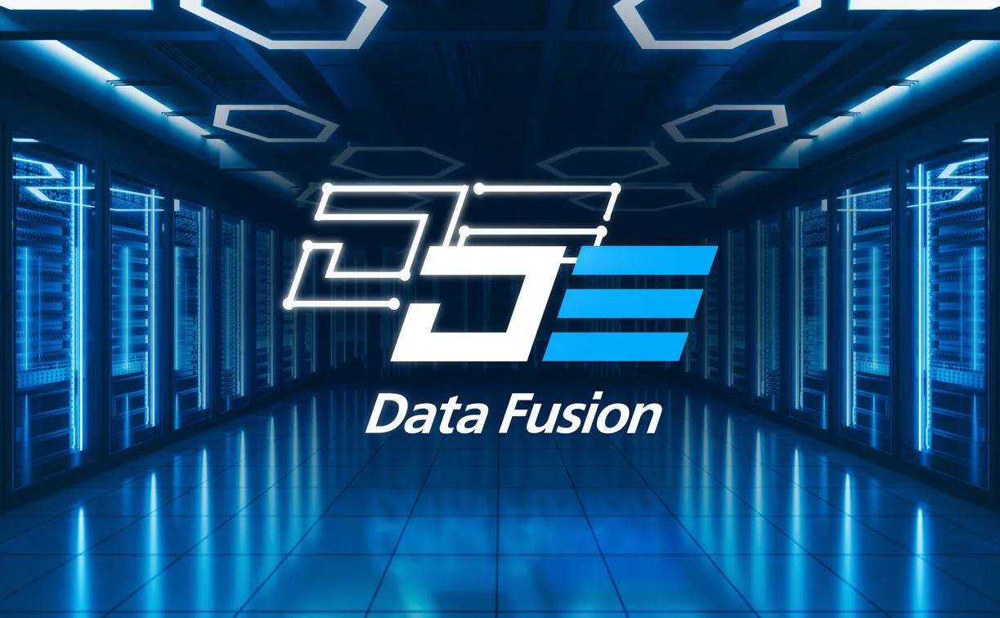

Конференция Data Fusion посвящена работе с данными и развитию технологий искусственного интеллекта. Это кросс-индустриальная площадка для диалога бизнеса, науки и государства.
Data Fusion — это уникальное событие, где эксперты из разных отраслей обсуждают актуальные вопросы анализа данных, машинного обучения и внедрения ИИ-решений. Участники делятся опытом, представляют инновационные проекты и строят партнерские отношения.
На конференции вас ждут:
Чтобы зарегистрироваться на конференцию, перейдите по ссылке ниже:
Регистрация на Data FusionЕсли у вас есть вопросы, свяжитесь с организаторами: